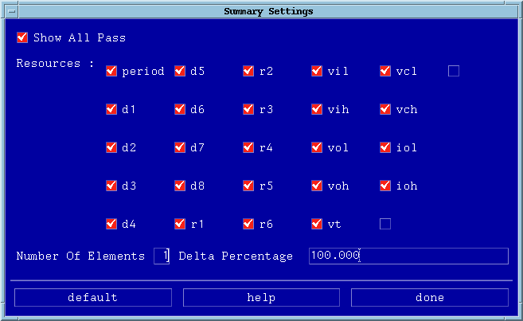
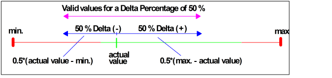

Summary
The summary selection lets you specify what the test report summary will contain; it essentially acts like a filter. This summary will be at the end of the test report, once you have performed a test.
- Select Summary in the Settings pulldown menu. A screen similar to that
of the figure below appears.

- Set up your summary settings as appropriate (see the guidelines below), and click
done when finished.
Show All Pass results in all individual lines where no pass/fail transition were found - only passes - also being displayed. If you have many lines where this occurs you may prefer to deactivate this choice.
Resources let you filter out any parameters you are not particularly interested in.
Number of Elements refers to the number lines of individual pin margin tests you want to include (maximum 10).
Delta Percentage represents a window of results you are interested in - see the figure below. Pin margin tests failing within this window appear in the test summary. If the delta percentage yields more values than given by the number of elements, only the top Number of Elements with the tightest margins are displayed. These elements are ordered by their margins, starting with the element with the tightest margin.
How the delta percentage window is defined is shown in the figure below.
